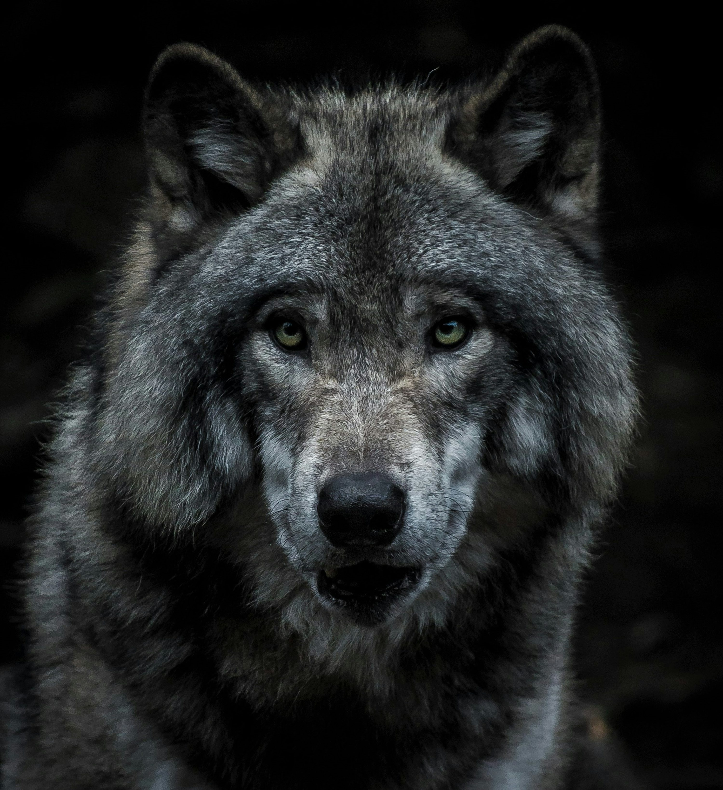

Click here to know about Elephants
Wolves
All About Wolves

Wolves are highly social animals that live and hunt in packs. They are known for their strong family bonds and cooperative behavior. Wolves communicate through a variety of vocalizations, body language, and scent marking. They are apex predators, playing a crucial role in maintaining the balance of ecosystems by controlling prey populations.
Interesting Facts about Wolves
- Wolves can run at speeds of up to 35 miles per hour (56 kilometers per hour).
- They have a keen sense of smell, which they use to track prey and communicate with other wolves.
- Wolves are known for their howling, which serves as a means of communication within the pack and to mark territory.
- A wolf pack typically consists of a dominant breeding pair (the alphas) and their offspring.
- Wolves are found in a variety of habitats, including forests, tundras, and grasslands.
Click here to know more about Wolves!
This page was created by Aradhay Kaudinya for educational purposes only. And to share knowledge about Wolves.